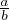

Naturaalarvud on nullist suuremad arvud: 1,2,3,... . Naturaalarvude hulka
tähistatakse sümboliga N.
Täisarvude hulga moodustavad naturaalarvud, null ja miinusmärgiga
naturaalarvud: … - 3,-2,-1,0,1,2,3…. Täisarvude hulka tähistatakse sümboliga
Z.
Ratsionaalarvud on arvud, mida saab esitada kahe täisarvu jagatisena: , kui a ja
b on täisarvud ning b≠0. Ratsionaalarvude hulka tähistatakse sümboliga
Q.